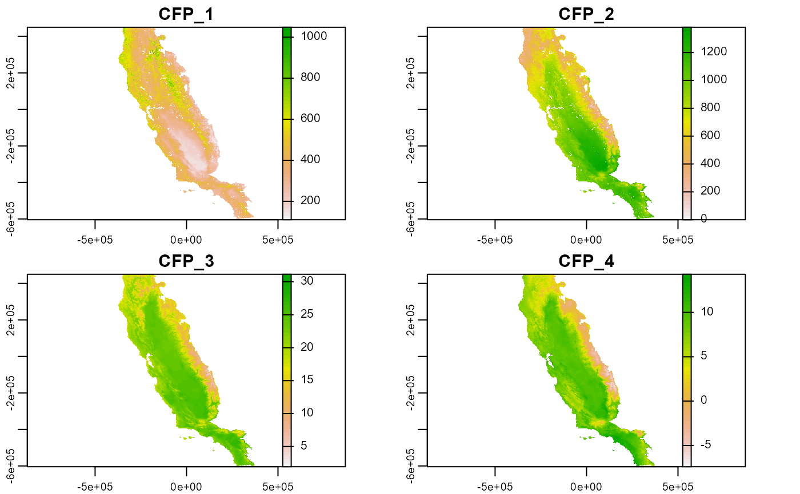
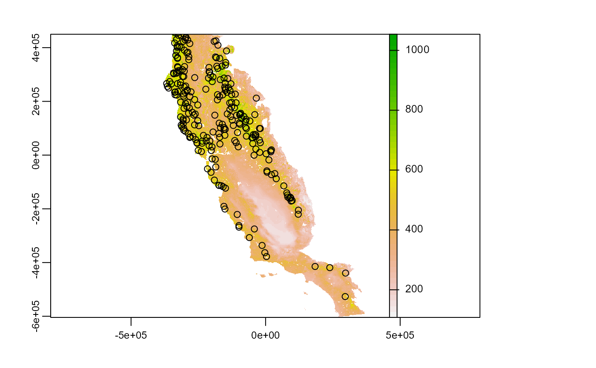

env_filtering.RdFunction to perform environmental filtering of species occurrence records
env_filtering(data, x, y, id, variables, nbins, cores = 1)
| data | data.frame. Data.frame or tibble object with presences (or presence-absence) records, and coordinates |
|---|---|
| x | character. Column name with longitude data |
| y | character. Column name with latitude data |
| id | character. Column names with rows id. It is important that each row has its own unique code. |
| variables | SpatRaste. Rasters with environmental conditions |
| nbins | integer. A number of classes used to split each environmental condition |
| cores | integer. Number of machine cores used for processing in parallel |
A tibble object with filtered data
# \dontrun{ require(terra) require(dplyr) # Envirnomental variables somevar <- system.file("external/somevar.tif", package = "flexsdm") somevar <- terra::rast(somevar) plot(somevar)#> # A tibble: 1,150 x 4 #> species x y pr_ab #> <chr> <dbl> <dbl> <dbl> #> 1 sp1 -5541. -145138. 0 #> 2 sp1 -51981. 16322. 0 #> 3 sp1 -269871. 69512. 1 #> 4 sp1 -96261. -32008. 0 #> 5 sp1 269589. -566338. 0 #> 6 sp1 29829. -328468. 0 #> 7 sp1 -152691. 393782. 0 #> 8 sp1 -195081. 253652. 0 #> 9 sp1 -951. -277978. 0 #> 10 sp1 145929. -271498. 0 #> # ... with 1,140 more rowsspp1$idd <- 1:nrow(spp1) # 5 bins filtered_1 <- env_filtering( data = spp1, x = "x", y = "y", id = "idd", variables = somevar, nbins = 5, cores = 1 )#>#>#>#>#># 8 bins filtered_2 <- env_filtering( data = spp1, x = "x", y = "y", id = "idd", variables = somevar, nbins = 8, cores = 1 )#>#>#>#>#># 12 bins filtered_3 <- env_filtering( data = spp1, x = "x", y = "y", id = "idd", variables = somevar, nbins = 12, cores = 1 )#>#>#>#>#># note that while higher the nbins parameter higher the number of # classes to be processed (4 variables, 30 bins = 923521 classes) # While higher the number of bins smaller the number of records retained # }